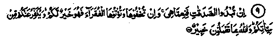
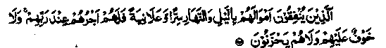

Chapter One · Section (a): Ayaat on the virtues of spending for the cause of Allah
3. Giving Sadaqah secretly and openly

9. If ye publish your almsgiving, it is well, but if ye hide it and give it to the poor, it will be better for you, and will atone for some of your ill-deeds. Allah is informed of what you do. (al-Baqarah-271)

Those who spend their wealth by night and day, by stealth and openly, verily their reward is with their Lord, and there shall no fear come upon them neither shall they grieve. (al-Baqarah: 274)
Note: In both the above Ayaat, the giving of Sadaqah either publicly or privately has been praised while, in many Ayaat of the Qur’an and also in several Ahadith, an act committed for show or hypocritically has been termed as a vice or ‘Shirk’; in fact it nullifies the reward and turns the act into a sin. However, it should first be understood that ‘show’ has another sense as well. It may not necessarily mean that every good deed done in public would amount to ‘show’. Actually ‘show’ means that an act is done to display one’s own greatness or for the sake of publicity or honour or for being called generous. A deed done purely for seeking the good-will and pleasure of Allah Ta‘ala, even publicly, for some good cause would thus not be ‘show’ at all. Still the best form of every act of charity, presumably, is that done in secret, so as to eliminate all doubts of show and publicity. Also it will prevent the poor from feeling humiliated. Even though an open deed may not be for show, the inevitable fame fnay lead to self-conceit and pride for "being generous. It may also result in harassment, as a large number of people may start seeking his favour. His fame for being wealthy may bring him to harm. He may have to pay taxes, his riches may tempt the thieves and breed ill-will in the heart of the jealous Imaam Ghazali Rahmatullah alaihe has said that one keeps away from publicity and hypocrisy when alms are given in secret. It has also been related that Rasulullah Sallallaho alaihe wasallam said, “The best charity is that given by a person who is himself pressed for money and who gives Sadaqah to a needy person quietly out of his own earnings; and whoever talks about his charity is a seeker of publicity; and the one who gives alms in public is a hypocrite. In olden days, the truly pious tried their utmost to remain unknown to the poor who received help from them. Some of them chose blind persons as recipients of their charity. Some would slip money into the pocket of a sleeping person, some would give through others so as to remain anonymous and save the poor from humiliation. However, Sadaqah given for self-publicity means destroying a good deed, and getting a sin. Imaam Ghazali Rahmatullah alaihe has written, "Where publicity is the aim, the deed becomes useless", the reason being that obligatory Zakaat has been ordered to reduce the love of wealth. Usually the love for status is stronger than the love for wealth. Both will be the cause of ruination in the ‘Akhirah’. Miserliness will appear in the grave as a huge scorpion, while love of status and hypocrisy will assail the dead man in the form of a python" (Ihya-ul-Uloom). According to a Hadith, it is enough for one’s condemnation if people point him out for worldly or religious fame. Ibrahim Bin Adham Rahmatullah alaihe has said that when a person takes pleasure in self-publicity, his dealings with Allah are not sincere. Ayoob Sakhtiani Rahmatullah alaihe has said that a person true to Allah would prefer to keep the whereabouts of his residence unknown to people. (Ihya-ul-Uloom)
Once Umar Radhiallaho anho came to the Masjid-Nabavi and found Ma'az Radhiallaho anho sitting and crying by the side of the grave of Rasulullah Sallallaho alaihe wasallam. He enquired why he was crying. Ma‘az Radhiallaho anho replied that he had heard Rasulullah Sallallaho alaihe wasallam saying that the smallest hypocrisy amounts to ‘Shirk’ and Allah loves those pious people who live in unknown corners so that no one looks for them when they have left a place and if they are in a crowd no one recognises them; their hearts are the torches of guidance and they keep away from all dark and dirty spots. (Ihya-ul-Uloom)
Although many Ayaat of the Qur’an and many Ahadith are there to condemn show and hypocrisy, nevertheless, sometimes an open deed becomes a religious necessity. As for example, Sadaqah from a small number of persons may not be enough to meet an important religious requirement; in which case, the difficulty could be solved through encouraging others by raising funds through open charity. Fo? this very purpose, Rasulullah Sallallaho alaihe wasal-lam has said that a man reciting the Holy Qur’an aloud is like one giving Sadaqah in public, while reading it in low tone is like giving Sadaqah quuuy. (Mishkaat). Hence, the best mode of reading the Qur’an depends on expediency; sometimes it may be better to read aloud and at another time in a low tone. Many Ulama have been quoted as saying that the first of the two Ayaat mentioned above refers to obligatory charity (Zakaat) as well as the optional one (Nafl) Sadaqah. The best way to give Zakaat is to give publicly, as is the requirement about all obligatory performances. This is for the r purpose of encouraging others to fulfil the Divinely ordained obligations and also for the sake of absolving oneself from the possible blame of neglecting the payment of Zakaat. For the same reason Salaat is to be performed publicly in congregation (Jama'at).
Hafiz Ibne Hajar Rahmatullah alaihe has said that Allama Tabari Rahmatullah alaihe and others have quoted a unanimous opinion of the Ulama that the obligatory Sadaqah (Zakaat) is better given openly and the ‘Nafl’ Sadaqah is better when given secretly. Zain Ibnul Munir Rahmatullah alaihe has said that it all depends on circumstances: if the ruler is known to be unjust, mid property is kept concealed, giving of Zakaat is better kept secret. In the same way, if a person is being followed, any type of charity given by him openly will be beneficial. (Fathul Bari). Ibn Abbas Radhiallaho anho, in his explanation of the above mentioned Ayaat, has said that Allah Ta'ala makes the reward for Nafl Sadaqah given secretly to excel seventy times the reward for open Sadaqah. The reward for ‘Fardh’ (obligatory) Sadaqah given openly however excels twenty five times the reward for Sadaqah given secretly. Similarly, the same rule applies to all other deeds of worship, obligatory or optional. (Durre Manthur). It implies that amongst all deeds,- the performance of obligatory ones is best if done in public rather than in secret, because doing them secretly may bring the person concerned under false accusations, of neglecting the relevant Ibadat (worship) and secondly, if such an accusation comes from persons connected with him, the value and importance of that Ibadat may leave their hearts. Open performance is preferred even in Nafl Ibadat, if others are thereby likely to follow the example. Ibne Umar Radhiallaho anho has reported Rasulullah Sallallaho alaihe wasallam as saying that a virtuous deed done secretly is better than the one done openly, except when the latter is meant as a persuasion for others. Abu Umamah Radhiallaho anho has said that when Abu Zarr Radhiallaho anho asked Rasulullah Sallallaho alaihe wasallam as to which type of Sadaqah was best, the reply was, "Giving something quietly to the poor". To make effort to help another, in spite of ones own helplessness, is, however, better. The superiority of giving ‘Nafl’ Sadaqah secretly is the basic rule; if a religious exigency be in mind, giving it publicly becomes better, but in the event the man should not be heedless in allowing the baser self (Nafs) and Shaitan to convince him that there is an exigency in giving openly, and thus ruin his Sadaqah. He should rather determine carefully if there is really an exigency in giving openly. Above all, he should avoid mentioning the Sadaqah given by him, because that too, would be tantamount to giving openly. One Hadith says that a person performs a good deed secretly and it is recorded as such; later when he talks about it to someone, it is changed from secret deed to an open one, and if he keeps mentioning it to people, the same is recorded as an act of hypocrisy. (Ihya-ul-Uloom)
Rasulullah Sallallaho alaihe wasallam has said that seven persons shall enjoy the shade of Allah Jalla Shanohu when there will be no other shade on the Day of Judgement
(i) A just king (ruler);
(ii) A young person who is nurtured in ‘Ibadat’ of Allah Ta'ala;
(iii) A person whose heart is attached to the Masjid;
(iv) Two persons who love each other for the pleasure of Allah, without any worldly motive, and they meet and separate in that spirit
(v) A man who, due to fear of Allah, refuses to go near a respectable beautiful woman, sexually inclined towards him, as also a woman who in a similar situation refuses to meet a man;
(vi) A person who gives Sadaqah so secretly that his left hand does not know what the right hand gives away;
(vii) A person who cries when remembering Allah in solitude.
This particular Hadith mentions only seven persons; according to an other Hadith some other people, besides these, will enjoy the shade of the ‘Arsh’ (Allah Ta‘ala’s throne) on that severe Day. The Ulama have counted them as eighty two categories, which have been recounted by the writer of ‘It-haaf’. Many Ahadith relate Rasulullah Sallallaho alaihe wasallam as saying, "Concealed Sadaqah causes the wrath of Allah to wane". Saalim Ibne Abil Ja’ad Rahmatullah alaihe has said that a woman was travelling alone with her infant son when a wolf snatched it away from her hands. The woman was running after the wolf when a beggar approached her and asked for something. She had only a single loaf of bread, which she gave away to the beggar. Thereafter, the wolf returned and left the baby with his mother. Rasulullah Sallallaho alaihe wasallam has said that three persons are loved by Allah and He is displeased with three. Those whom He loves are: the first is a person in a crowd of people who, when a man approaches and begs for something from them "(among whom none is related to the beggar), moves away from the crowd and gives the beggar something of which only Allah Ta'ala is aware; the second is a person who is travelling with a group at night and when sleep overtakes them and they call a halt, leave their conveyances and go to sleep, he stands up instead of sleeping and offers his Salaat with full humility; the third is the person who, when engaged in a battle against the Kaafirs, holds '-is ground bravely till he is killed (meets Shahadat) or is victorious, while his companions turn their back due to heavy pressure of the enemy. The three with whom Allah Ta‘ala is displeased are; first, a person who indulges in adultery even in his old age; second who is a beggar, and still arrogant; and third, a rich man who is cruel. This very Hadith is recorded at Serial No. 15. One of the Ahadith quoted by Jabir Radhiallaho anho says that once Rasulullah Sallallaho alaihe wasallam gave a sermon saying, "O people repent of your misdeeds before death overtakes you; be quick in seizing the opportunity of doing a good deed lest you should lose the chance by getting busy in something else; try to attain nearness to Allah Ta ‘ala by means of ‘Zikr’ and by Sadaqah given openly as well as secretly; because due to this, you will receive your livelihood, Allah’s help and remedy for discomfiture".
Another Hadith says that, on the Day of Judgement, every one will be under the shade of one’s Sadaqah, i.e. when the sun will be very close overhead, on the day of ‘Qiamah’ every person will be provided shade overhead according to the amount of his Sadaqah till the reckoning is finished. The larger the Sadaqah, the larger will be the shade. Another Hadith says that Sadaqah cools the heat of the grave and every person will get a shade from his Sadaqah, on the Day of Judgement Many Ahadith have mentioned the point that Sadaqah drives away many afflictions. Due to their own misdeeds,. the Muslims today are afflicted with perils all over the world.. Obviously, the remedy lies in giving more Sadaqah. In the prevailing conditions when one is likely to lose all one’s property, all of a sudden, the best way to protect it is to give maximum Sadaqah. That part will be certainly saved and its blessing will drive away the coming misfortunes. But alas! In spite of seeing these conditions with our own eyes, we do not seem to give charity to the extent that the time demands. Another Hadith says, "Sadaqah closes seventy doors towards evil", while still another one says that Sadaqah removes Allah Ta'ala's anger and saves the giver from a bad death. According to another Hadith, "Sadaqah increases the span of a man’: life and cures him of conceit and arrogance". Yet another Hadith relates that Allah Ta‘ala, in return for giving a morsel of bread or a handful of dates, or anything else that may satisfy a poor man’s need, shall grant entry into Jannah to three persons: (a) The owner of the house who ordered the Sadaqah (b)The house-wife who cooked the bread, etc. (c) The servant who took it to the needy person. After saying this much, Rasulullah Sallallaho alaihe wasallam remarked, "All praises are for Allah who has not forgotten even our servants while giving His rewards". Once Rasulullah Sallallaho alaihe wasallam asked the Sahabah, "Who is the strongest of men?" They replied, "The one who gets the better of his opponent in a contest". He said, "The strongest man is he who can control himself when he is angry". He then asked, "Who is a barren person"? They replied, "The one who is incapable of bearing offspring.” Rasulullah Sallallaho alaihe wasallam said, "No, it is the one who has not sent a child ahead of him to, the Hereafter". He then asked, "Who is a destitute person?" They replied, "The one who has no property". Rasulullah Sallallaho alaihe wasallam said, "The destitute person, and the utterly destitute, is he who possessed property but did not send anything ahead of him" (for the Day when his need would be the greatest but he would be empty-handed). .
Abu Hurairah Radhiallaho anho narrates that once Rasulullah Sallallaho alaihe wasallam said, "Aishah! Bargain your amnesty from Allah Ta'ala, even though it be with a piece of a date; for I shall not be able to hdp you against any demand from Allah Ta‘ala; O Aishah, let not a beggar go away from you empty-handed; give him something; even if it be a goat’s hoof". (Durre Manthur).
Imaam Ghazali Rahmatullah alaihe says that, in the early days of Islam, people used to consider it a bad day if no charity had been given during it, and they gave alms every day, even though it was a date or a piece of bread. For, they kept the Hadith of Rasulullah Sallallaho alaihe wasallam in view, which says, "Everybody will be under the shade of his Sadaqah, on the Day of Resurrection". (Ihya)
10. Allah has blighted usury and made alms-giving fruitful. (al-Baqarah: 276)
Note: We have already quoted many traditions about the fruitfulness of Sadaqah; these Ahadith say that the reward for Sadaqah goes on increasing till it becomes as big as a mountain.
Those rewards will accrue in the Akhirah, but even in this life the Sadaqah causes one’s income to grow. If a man gives away charities, sincerely and plentifully, his income goes on increasing. Let anyone try it, but sincerity is the condition; there must be no inkling of self-display or pride in spending. As regards usury, it is bound to be a bad bargain in the Akhirah, while here, too, usury brings ruination. Abdullah bin Mas'ood Radhiallaho anho narrates that Rasulullah Sallallaho alaihe wasallam once said, "Even though usury may look productive, it leads to want and poverty in the end". Similarly Ma’mar Rahmatullah alaihe says that usury tends to decrease one’s wealth in forty years.
Hazrat Dhahaak Radhiallaho anho says that although usury increases in this world, it shall certainly lead to ruin in the Hereafter. Abu Barzah Radhiallaho anho narrates that Rasulullah Sallallaho alaihe wasallam said, "A man just gives a piece in charity and Allah Ta'ala grants it increase till it grows large in size like Mount Uhad.